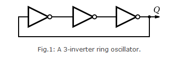

Shakshat Virtual Lab 
INDIAN INSTITUTE OF TECHNOLOGY GUWAHATI
The aim of this experiment is to design and plot the output characteristics of 3-inverter and 5-inverter ring oscillator.
Introduction
A ring oscillator is a device composed of an odd number of NOT gates whose output oscillates between two voltage levels, representing true and false. A schematic diagram of a simple three inverter ring oscillator is shown in Fig.1.

The NOT gates, or inverters, are attached in a chain; the output of the last inverter is fed back into the first. Because a single inverter computes the logical NOT of its input, it can be shown that the last output of a chain of an odd number of inverters is the logical NOT of the first input. This final output is asserted a finite amount of time after the first input is asserted; the feedback of this last output to the input causes oscillation. A real ring oscillator only requires power to operate; above a certain threshold voltage, oscillations begin spontaneously. To increase the frequency of oscillation, two methods may be used. Firstly, the applied voltage may be increased; this increases both the frequency of the oscillation and the power consumed, which is dissipated as heat.
Operation
To understand the operation of a ring oscillator, one must first understand gate delay. In a physical device, no gate can switch instantaneously; in a device fabricated with MOSFETs, for example, the gate capacitance must be charged before current can flow between the source and the drain. Thus, the output of every inverter of a ring oscillator changes a finite amount of time after the input has changed. From here, it can be easily seen that adding more inverters to the chain increases the total gate delay, reducing the frequency of oscillation. The switching frequency at each gate is inversely proportional to both the number of gates in the ring and the gate delay of each individual gate. A typical simulation output for a ring oscillator is shown in Fig. 2.

The simulation in Fig.2 shows the "warm-up" of the inverter circuit followed by a stable frequency oscillation. The main problem of this type of oscillator is the very strong dependence of the output frequency with virtually all process parameters (like W, L etc) and operating conditions. As an example, the power supply voltage VDD has a very significant importance on the oscillating frequency. The output frequency of a 3-inverter ring oscillator can be written as 1/(6×inverter delay). Thus the propagation delay of an inverter circuit can be obtained by measuring the time period of the oscillator.